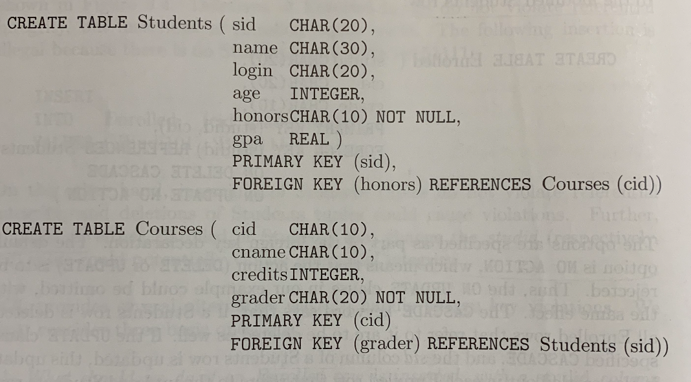

PostgreSQL creates tables
Concepts
- relation: a relation consists of a relation schema (column heads of a table) and a relation instance (the table)
- relation schema: relation's name, name of each field/column/attribute, domain of each field.
- relation instance: a set of unique tuples/records
- cardinality: # of tuples
- degree/arity: # of fields
- domain constraints: the value of a field must reside in a range specified by the domain constraints.
- database instance: a collection of relation instances
- integrity constraints (ICs): a condition specified on a database schema and restricts the data that can be stored in a database instance.
PostgreSQL domain types
SQL (Structured Query Language)
- Table: a relation is called a table in SQL.
- SQL DDL (Data definition Lanaguage): a subset of SQL that is used to create, modify (insert), delete a table.
- Login to PostgreSQL:
Usage PostgreSQL in Linux: postgresql create a separate user called "postgres". By default only this user (and root) can access this PostgreSQL.
[Different from MySQL], database is created outside postgre prompt.nan$: sudo -i -u postgres postgres$: createdb myDB postgres$: dropdb myDB postgres$: psql myDB # enter the database myDB=#: - PostgreSQL commands:
# inside myDB=#: \l # list all databases \c db_name # connect to different db \dt # list all tables \dn # ?????? - SQL syntax:
Inside the interactive client terminal, a SQL command is executed after entering a ;
SQL keyword is not case-sensitive. But using capital letters by convention.-- get the current date SeLeCt CuRrEnT_dAtE; -- get current postgresql version SELECT version();
Types of ICs and Table Creation
- Key constraints: specify a subset of fields are unique. One of the key can be designated as the primary key.
CREATE TABLE Student ( sid CHAR(20), name CHAR(30), age INTEGER, gpa REAL, CONSTRAINT name_age_unique UNIQUE (name, age), /*contraint name_age_unqie is optional*/ CONSTRAINT studentKey PRIMARY KEY (sid)); - Foreign key constraints: a relation has a field that refer to the primary key (cannot be other fields) defined in another relation.
Foreign key field can also refer to the field of the same relation. For example, a student relation has a field called partner.CREATE TABLE Enrolled ( studid CHAR(20), grade CHAR(10), PRIMARY KEY (studid, grade), FOREIGN KEY (studid) REFERENCES Student); - Deferred vs. Immediate constraints:
Two relations refer to each other as foregin keys. Without the creating of another, the one cannot be created. Then we need to defer the constraints.
We construct a transaction. Within the transaction, multiple relations are modified. Then manually commit this transaction.
 - Table constraints:
- Assertion: